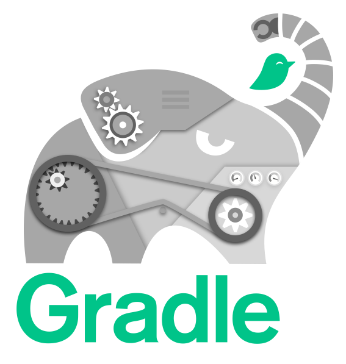

speaker {
name 'Cédric Champeau'
company 'Gradle Inc'
oss 'Apache Groovy committer',
successes 'Static type checker',
'Static compilation',
'Traits',
'Markup template engine',
'DSLs'
failures Stream.of(bugs),
twitter '@CedricChampeau',
github 'melix',
extraDescription '''Groovy in Action 2 co-author
Misc OSS contribs (Gradle plugins, deck2pdf, jlangdetect, ...)'''
}JavaOne 2016
Juggling Multiple Java Platforms and Jigsaw with Gradle
Cédric Champeau
Cédric Champeau
2016
Who am I

Groovy in Action 2

Coupon: groovyjo16 (42% off until Thursday)
What is Gradle?

Emerge from Build Hell
Unified, fast, reproducible builds
Cross-platform
Language agnostic
A Build Tool + Cloud Services
Project Jigsaw
Project Jigsaw
Modularity for the Java platform
Reliable configuration (goodbye classpath)
Strong encapsulation (goodbye com.sun)
Enforce strict boundaries between modules
compile-time
run-time
Jigsaw modules
Declaring a module
module-info.java
module com.foo.bar {
requires org.baz.qux;
exports com.foo.bar.alpha;
exports com.foo.bar.beta;
}A module
Declares dependencies onto other modules
optionally transitive (
public)
Declares a list of packages it exports
will be found on modulepath
Why it’s going to break your apps
Exports are package based
A non-exported package is not visible to consumers
2 modules cannot export the same packages
2 modules cannot have the same internal packages
Death to split packages.
How Gradle will help?
Find a smooth migration path
Prepare today, migrate when ready
Disclaimer
Work in progress
Backport from the software model
Running Gradle on Jigsaw requires Gradle 3.0+
Works with JDK 9 b119
Breaks with JDK 9 b136
Running those samples require
master
A simple project
Internal APIs
Internal APIs maintenance nightmare
The "Jigsaw" plugin
WIP
creates additional configurations for each platform
adds support for API
APIs enforced on JDK < 9 too
Demo
Declaring internal APIs
How to declare
Compilation fails!
Compile avoidance
Build scan
Compile avoidance benefits
Doesn’t recompile dependents if:
method body changes
parameter names change
method order changes
private method added/removed
In short: if API stable, do nothing
Declaring target platforms
Build scans
runonly compiled the Java 8 variant ofutils: https://gradle.com/s/mm2nlbuefyqjecompileJavaJava7only compiled the Java 7 variant ofutils: https://gradle.com/s/e6d3mnbxs7zkk
Running on multiple platforms
task run {}
platforms.targetPlatforms.each { platform ->
def platformRun = task "${platform}Run"(type: JavaExec) {
dependsOn "${platform}Jar"
classpath = files(tasks."${platform}Jar".archivePath,
configurations."runtime${platform.capitalize()}")
executable = "${platforms.jdkFor(platform)}/bin/java"
main = 'com.acme.core.Main'
}
run.dependsOn(platformRun)
}Why does Gradle help?
Add
targetPlatform 'java9'Generate module descriptor automatically?
Profit!
Trying it out
Automatically generating module-info.java?
Multi-release jars
Good idea: provide different versions of classes depending on runtime
Bad idea: in general, dependencies will be different so should be different artifacts
But let’s give it a try…
Creating a MRJAR
task multireleaseJar(type:Jar) {
dependsOn compileJavaJava7, compileJavaJava9
baseName = "${project.name}-multi"
from compileJavaJava7.destinationDir
into('META-INF/versions/9') {
from compileJavaJava9.destinationDir
}
manifest.attributes('Multi-Release': 'true')
}Fixing the run configurations
platforms.targetPlatforms.each { platform ->
def platformRun = task "${platform}Run"(type: JavaExec) {
dependsOn multireleaseJar
classpath = files(multireleaseJar.archivePath,
configurations."runtime${platform.capitalize()}")
executable = "${platforms.jdkFor(platform)}/bin/java"
main = 'com.acme.core.Main'
}
run.dependsOn(platformRun)
}Create version specific classes
What’s next?
Making this a first class citizen in Gradle
Automatic toolchain selection
Toolchain provisioning
Support for
modulepathSupport for
jimageandjlink
Be involved
Specs can be found on our GitHub repo
Free webinars
EXPLORE THE LATEST FEATURES IN GRADLE CLOUD SERVICES
September 28th, 2016 - 11am PDT / 2 pm EDT
By Mark Vieira (Principal Engineer at Gradle Inc)
RSVP: https://goo.gl/yFsgLD
Learn how to use Gradle Cloud Services to substantially improve the process of troubleshooting build/test failures, performance tuning of your builds, and analyzing your dependencies and plugins.
The latest release of Gradle Cloud Services will be available end of September. We would like to invite you to a 20 minutes webinar featuring what is new on Wednesday, September 28.
FREE LIVE TRAINING: INTRODUCTION TO GRADLE
Wed - Thurs October 26 - 27 8:30am - 12:30pm PDT
By Gary Hale (Principal Engineer at Gradle Inc)
RSVP: https://goo.gl/L6mKg4
Get hands-on training taught live by a Gradle core developer on the fundamentals features of Gradle in 8 hours.
We are very excited to announce a one-time offer to attend Gradle Inc’s Introduction to Gradle Training for FREE! For the last few years we have been charging $700-$900 per seat for our live, virtual Introduction to Gradle training. Don’t miss this chance to get a free seat to one our most popular training classes.
We’re hiring!

Thank you!
Slides and code : https://github.com/melix/javaone2016-juggling-jigsaw
Gradle documentation : http://gradle.org/documentation/
State of the module system: http://openjdk.java.net/projects/jigsaw/spec/sotms
Follow me: @CedricChampeau